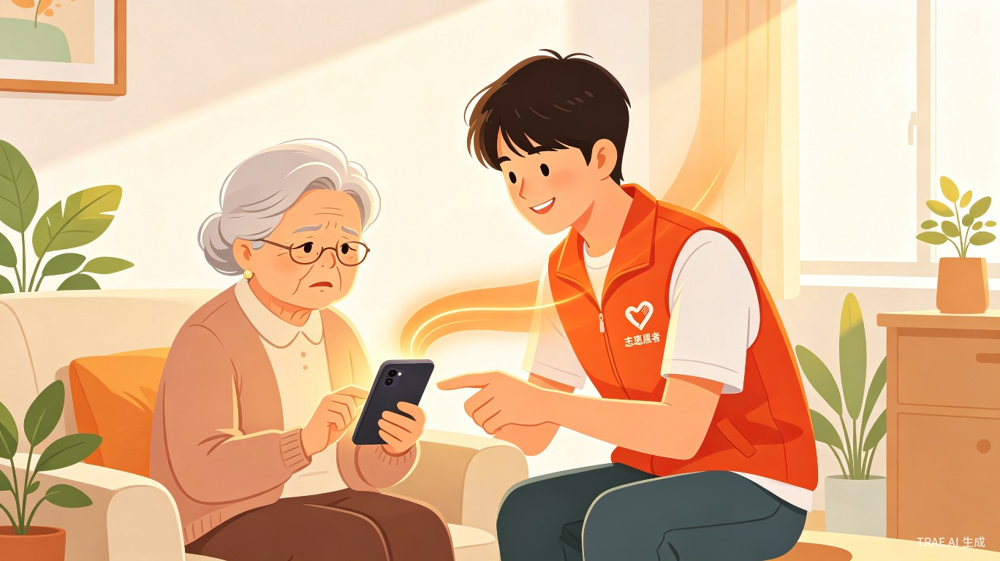

银发代际陪伴互助小程序
独居老年人日常缺少陪伴、简单数码操作无人指导，青年学生空闲时间闲置，两代人缺少安全可靠的线下线上互助对接渠道。
家中长辈独自居住，经常不会使用手机挂号、线上缴费，自己学业之余想帮忙却没时间长期陪伴；同时发现大量大学生有空余志愿时间，却找不到正规、就近的敬老服务渠道。
面向老人与青年志愿者的双向互助公益小程序。打通社区、老人、在校青年三方，搭建标准化安全互助匹配平台，区分线上远程协助、线下上门陪伴两类服务，兼顾老人生活刚需与青年公益实践需求。
场景：独自在家不会操作手机、生病需要陪同就医、日常想找人聊天解闷。
痛点：遇到数码难题只能麻烦邻居子女，子女异地无法及时赶回；线下找志愿者无正规渠道，上门人员身份无法核验。
场景：周末、晚自习后、节假日有空，想完成志愿时长、参与公益活动。
痛点：敬老志愿活动信息分散，报名流程繁琐，服务结束无官方时长认证，就近帮扶资源无法精准匹配。
以下为老人端与青年端的典型界面原型，展示核心功能流程与视觉风格。
以下为老人发布求助到青年接单服务的完整业务流程。
微信一键登录，社区实名认证
远程协助 / 上门陪伴，填写需求描述
系统自动匹配附近志愿者，推送通知
查看志愿者身份认证信息，确认接单
确认服务完成，双方互评，积累信用
学生身份认证（学信网/校园卡），背景审核
按距离、时间、服务类型筛选附近求助
确认服务时间地点，系统生成服务工单
线上视频/线下定位打卡，记录服务时长
服务完成，志愿时长自动同步至学校系统
flowchart TD
A[老人发布求助] --> B{服务类型}
B -->|远程协助| C[线上视频匹配]
B -->|上门陪伴| D[线下定位匹配]
C --> E[系统智能匹配算法]
D --> E
E --> F[推送附近志愿者]
F --> G[青年接单确认]
G --> H[双方身份核验]
H --> I[服务执行]
I --> J[服务打卡]
J --> K[时长自动统计]
K --> L[双方互评]
L --> M[信用积分更新]
社区管理员可通过后台进行实名认证审核、服务监管、数据统计与风险管控。
系统基于多维度权重计算，为每条求助订单匹配最合适的志愿者。
假设张奶奶发布了一条「手机挂号远程协助」求助，系统实时计算匹配结果：
| 对比维度 | 传统志愿平台 | 社区人工对接 | 时光同行 |
|---|---|---|---|
| 匹配方式 | 手动报名，无智能匹配 | 社区工作人员人工安排 | AI多维度智能匹配 |
| 志愿时长认证 | 需线下盖章确认 | 无统一认证体系 | 服务打卡自动录入 |
| 服务类型 | 以线下活动为主 | 以线下上门为主 | 线上远程 + 线下陪伴双模式 |
| 安全保障 | 身份核验不严格 | 依赖社区熟人网络 | 实名认证 + 实时定位 + 紧急求助 |
| 覆盖范围 | 大型活动，不精准 | 单一社区 | 跨社区精准就近匹配 |